About
I am a PhD student at the University of Washington working on Robotics and Machine Learning, advised by Prof. Byron Boots and Prof. Abhishek Gupta.
Previously
Previously, I was a Master’s student in Robotics in the Robotics Institute at Carnegie Mellon University, advised by Prof. Sebastian Scherer as a member of the AirLab and the Field Robotics Center. Before that, I studied electrical engineering at Tufts University, where I received my BS.
Research
I am interested in reinforcement learning and representation learning for fast adaptation and generalization in messy environments. My ultimate goal is to develop robots that adapt fast during deployment, probe when uncertain, and make mistakes only once, if at all.
Contact
- CV Oct. 2025
- Google Scholar
- GitHub
Publications
- 01Reinforcement learning at scale2026
-
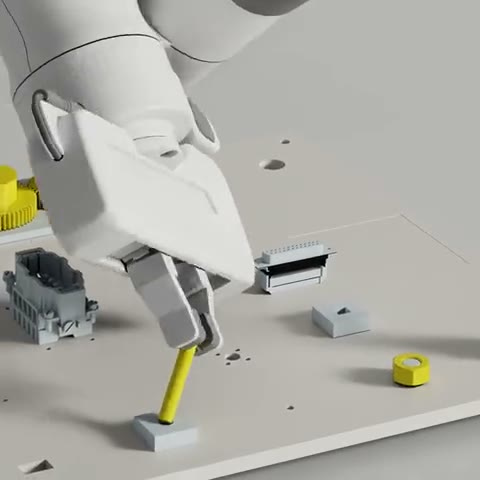
AlphaNIST: Emergent Assembly Skills from Binary Task Rewards
In submission
One policy learns contact-rich assembly on the NIST task board in simulation from binary task rewards, without prescribed manipulation stages.
-
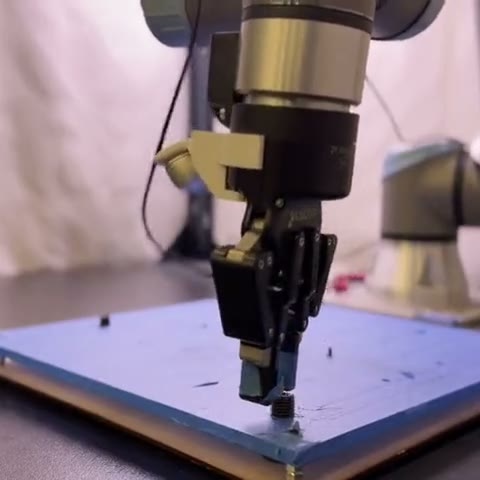
A Balanced Data Diet: Addressing the Exploration Bottleneck in Mega-Scale RL for Robot Control
*Equal contribution †Equal advising
Conference on Robot Learning (CoRL), 2026
Success-Guided Sampling (SGS) trains on the task configurations that are neither too easy nor too hard for the current policy. With it, reinforcement learning scales much more effectively, to over a million simulated robots at once, in legged locomotion and contact-rich manipulation.
-
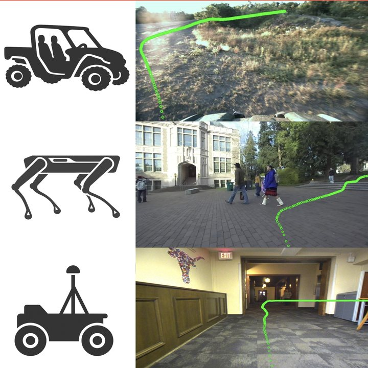
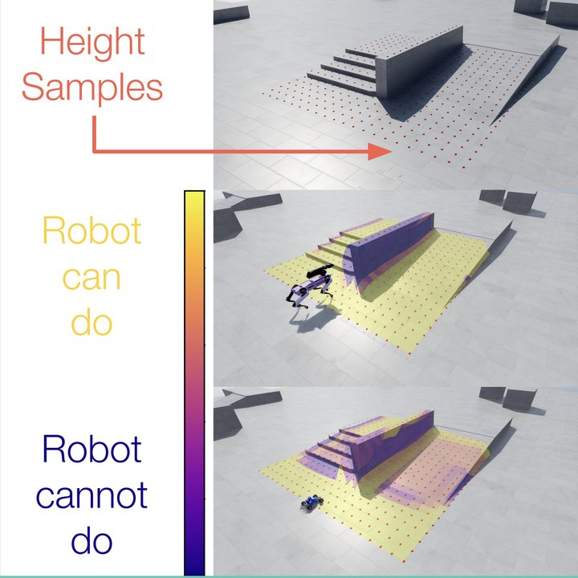
VAMOS: A Hierarchical Vision-Language-Action Model for Capability-Modulated and Steerable Navigation
IEEE Robotics and Automation Letters (RA-L), 2026
Oral at the CoRL 2025 Workshop on Generalist Policies in the Wild & Robo-Arena Challenge
VAMOS is a hierarchical vision-language-action model that decouples semantic planning from embodiment grounding, enabling robust cross-embodiment navigation with natural language steerability.
-
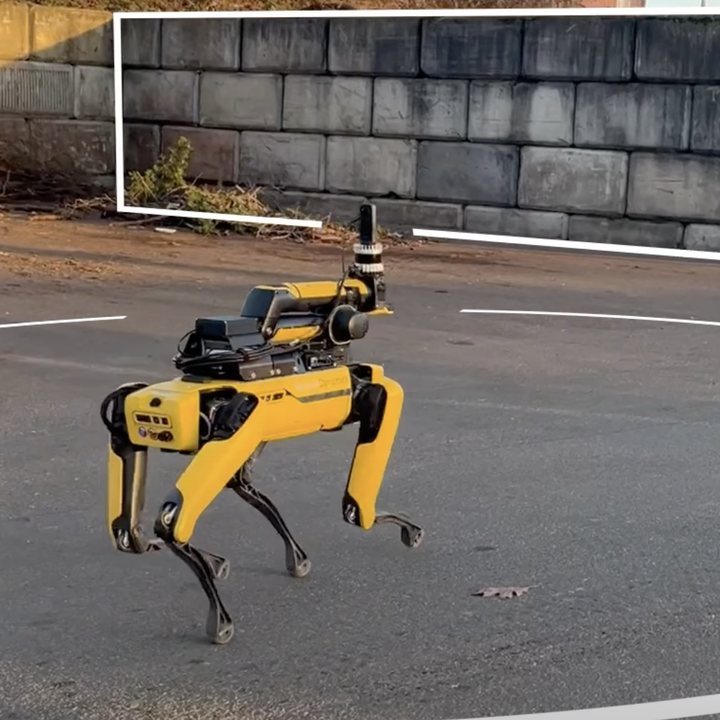
Long Range Navigator: Extending robot planning horizons beyond metric maps
Conference on Robot Learning (CoRL), 2025
Best Paper Award, RSS 2025 Workshop on Resilient Off-road Autonomous Robotics
Long Range Navigator enables robots to look beyond local maps through affordances in image space.
-
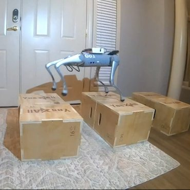
Agile Continuous Jumping in Discontinuous Terrains
International Conference on Robotics and Automation (ICRA), 2025
We developed a system that enables quadrupedal robots to perform continuous, precise jumps across challenging terrains like stairs and stepping stones, achieving unprecedented agility.
- 03Robot datasets2024
-
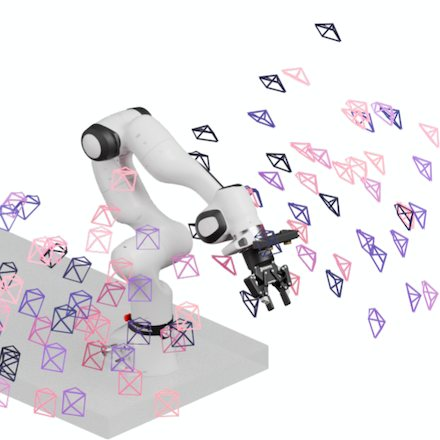
DROID: A Large-Scale In-the-Wild Robot Manipulation Dataset
Robotics: Science and Systems (RSS), 2024
We present a large dataset for robot learning.
-
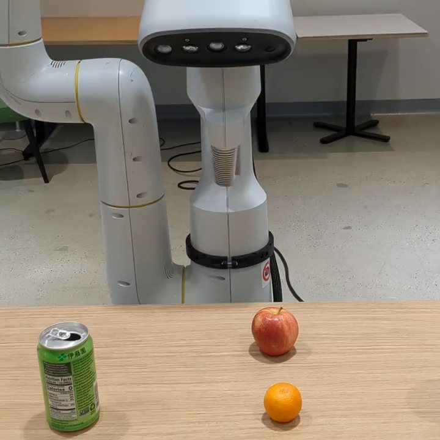
Open X-Embodiment: Robotic Learning Datasets and RT-X Models
International Conference on Robotics and Automation (ICRA), 2024
IEEE ICRA Best Conference Paper Award
We present a large dataset for robot learning.
- 04Off-road driving2023–2024
-
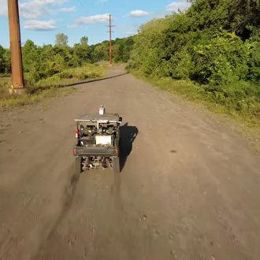
TartanDrive 2.0: More Modalities and Better Infrastructure to Further Self-Supervised Learning Research in Off-Road Driving Tasks
International Conference on Robotics and Automation (ICRA), 2024
We present a dataset for off-road driving with multiple modalities at high speed.
-
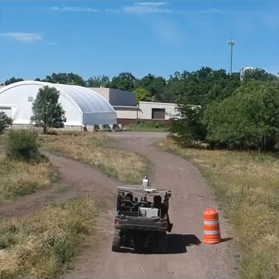
How Does It Feel? Self-Supervised Costmap Learning for Off-Road Vehicle Traversability
International Conference on Robotics and Automation (ICRA), 2023
We propose a self-supervised method to predict traversability costmaps by combining exteroceptive environmental information with proprioceptive terrain interaction feedback.
-
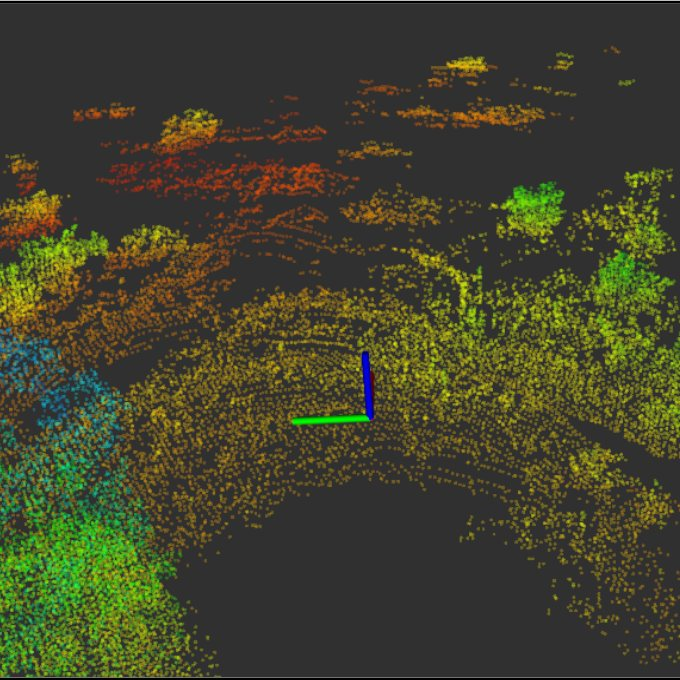
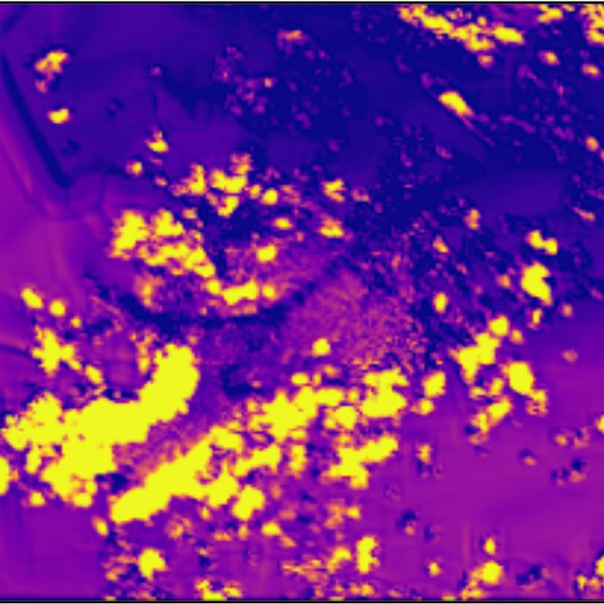
Learning Risk-Aware Costmaps via Inverse Reinforcement Learning for Off-Road Navigation
International Conference on Robotics and Automation (ICRA), 2023
We present an inverse reinforcement learning-based method that efficiently predicts uncertainty-aware costmaps for off-road traversability via conditional value-at-risk (CVaR).
-
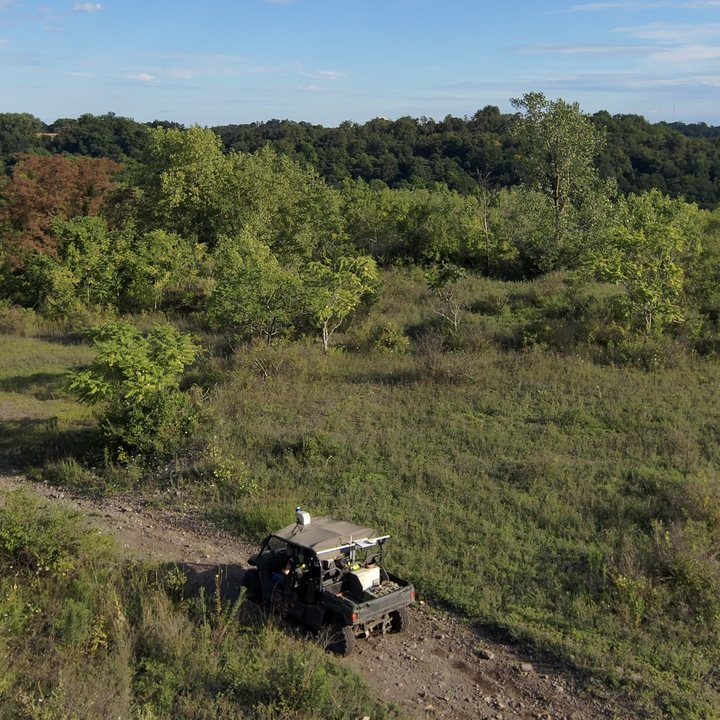
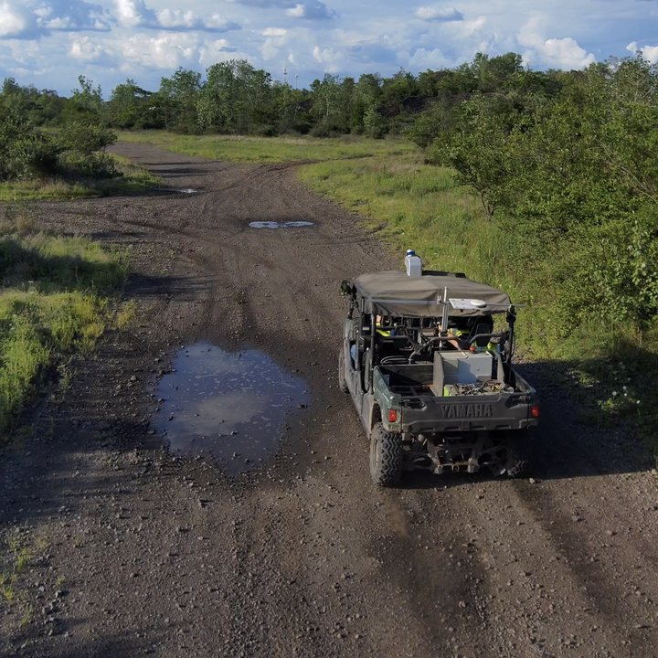
TartanDrive 1.5: Improving Large Multimodal Robotics Dataset Collection and Distribution
Workshop on Pretraining for Robotics (PT4R), International Conference on Robotics and Automation (ICRA), 2023
In this work we discuss the improvements to our previous dataset, TartanDrive.
- 05Creative problem solving2019–2022
-
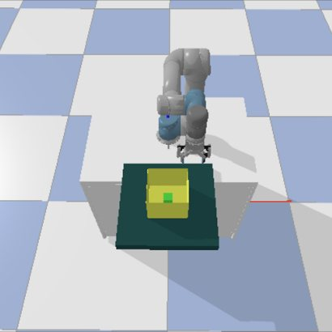
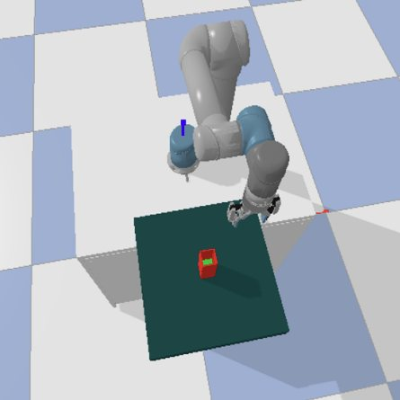
Toward Life-Long Creative Problem Solving: Using World Models for Increased Performance in Novelty Resolution
International Conference on Computational Creativity (ICCC), 2022
In this work, we investigate methods for life-long creative problem solving (LLCPS), with the goal of increasing CPS capability over time.
-
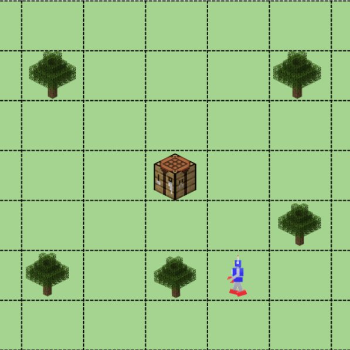
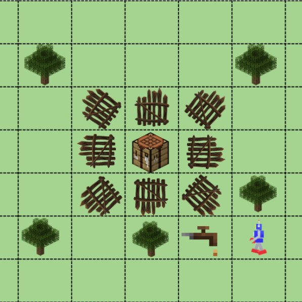
A Novelty-Centric Agent Architecture for Changing Worlds
International Conference on Autonomous Agents and Multiagent Systems (AAMAS), 2021
We present a formal framework and implementation in a cognitive agent for novelty handling and demonstrate the efficacy of the proposed methods for detecting and handling a large set of novelties in a crafting task in a simulated environment.
-
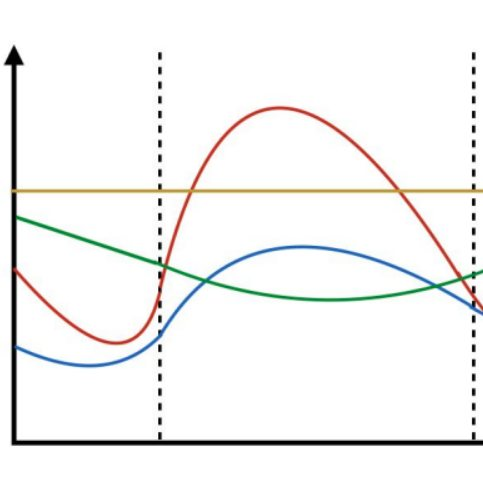
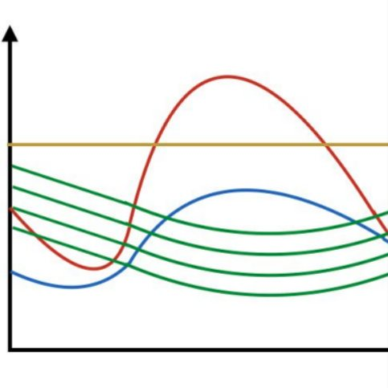
A Framework for Creative Problem Solving Through Action Discovery
Workshop on Declarative and Neurosymbolic Representations in Robot Learning and Control, Robotics: Science and Systems (RSS), 2021
We introduce a unified framework for creative problem solving through action discovery. We describe two methods which enable action discovery at a declarative and neurosymbolic level, namely through action primitive segmentation, and behavior babbling, respectively.
-
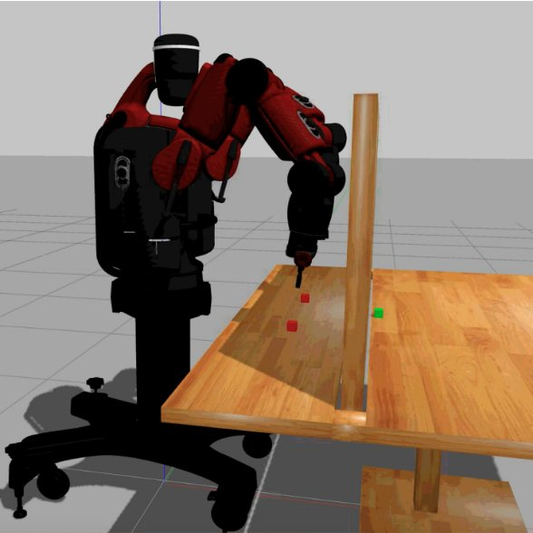
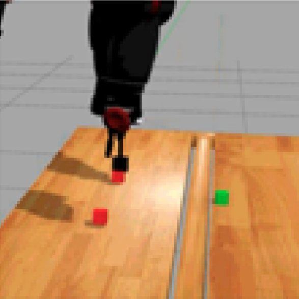
Creative Problem Solving by Robots Using Action Primitive Discovery
International Conference on Development and Learning (ICDL), 2019
We describe a method for discovering new action primitives through object exploration and action segmentation, which is able to iteratively update the robot’s knowledge base on-the-fly until the solution becomes feasible.